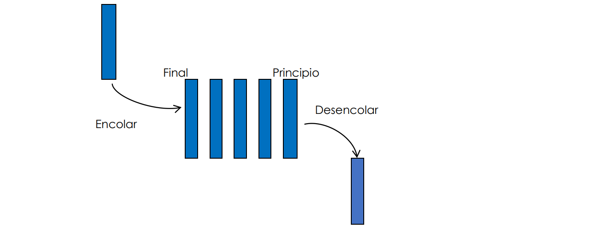
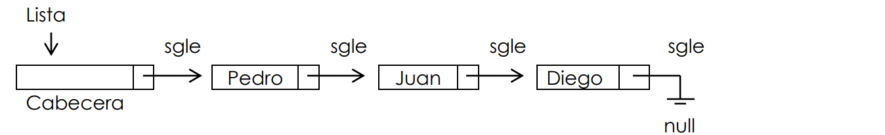
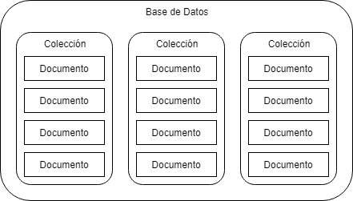

¿Que es?
Se caracterizan por sus elementos, los cuales son:
- Están ubicados uno al lado del otro relacionados en forma lineal.
- Pueden estar conformados por uno o varios subelementos o campos que pueden pertenecer a cualquier
tipo de dato.
- Ocupan lugares sucesivos en la estructura y cada uno de ellos tiene un único sucesor y un único
predecesor, entendiendo esta como una secuencia.
Modelo que define valores y las operaciones que se pueden realizar sobre ellos. Se denomina abstracto, ya que, la intención es que quien lo utiliza, no necesite conocer los detalles de la representación interna o bien el como están implementadas las operaciones.
Estructuras Lineales Principales
Existen tres estructuras lineales principales las cuales son:
- Las Pilas.
- Las Colas.
- Las Listas.
Sus operaciones basicas para dichas estructuras son:
- Crear
- Añadir
- Borrar
- Consultar
- Comprobar
Pilas / Stack
Es una estructura en la que ñps datos son agregados y eliminados únicamente por un extremo de la estructura.
Tipos de Pilas
- Pila vacia.
- Pila con elementos.
- Pilla llena.
Colas / Queue
Es una estructura de datos lienal en la que los datos son agregados por un extremo y eliminados por el extremo opuesto.
Tipos de Colas
Bicolas de Entrada Restringida:
Son aquellas donde la inserción sólo se hace por la final, aunque podemos eliminar al inicio o al final.
Bicolas de salida restringida:
Son aquellas donde sólo se elimina por el final, aunque se puede insertar al inicio y al final.
Colas de Prioridad
Una cola de prioridad es una estructura de datos en la que los elementos se atienden en el
orden indicado por una prioridad asociada a cada uno. Si varios elementos tienen la misma
prioridad, se atenderán de modo convencional según la posición que ocupen.
Este tipo especial de colas tienen las mismas operaciones que las colas, pero con la condición
de que los elementos se atienden en orden de prioridad.
Se entiende la prioridad como un valor numérico y asignando a altas prioridades de valores
pequeños, las colas de prioridad nos permiten añadir elementos en cualquier orden y recuperarlos
de menor a mayor.
Hay dos Tipos de Colas de Prioridad
- Las colas de prioridad con orden descendiente.
- Las colas de prioridad con orden ascendente
Listas / List
Es una secuencia de nodos autorreferenciados con una o dos referencias al nodo anterior y/o siguiente.
Un nodo es una estructura que agrupa un conjunto de datos o campos arbitrarios, donde por lo menos un campo es de referencia o enlace a un nodo del mismo tipo (autorrefenciado).
Aplicación
Cuando una aplicación inicia el método principal es invocado y se reserva memoria en la pila. En el segmento de memoria de la pila donde se alojan las variables requeridas por las funciones dentro del programa. Asi mismo, cada vez que se llama una función del programa. Una sección de la pila llamada marco o frame, se reserva y es hay donde las variables de la nueva función son almacenadas.
Colecciones o Bolsas
Las colecciones son nodos o registros que mantienen relación entre sí.
Conjuntos
Es una colección de valores, sin orden, ni valores repetidos. Puede verse, como una cadena asociativa donde no se siente al valor de cada par clave-valor.
Lista
Es una estructura lineal compuesta por una secuencia de 0 o más elementos de algún tipo determinado y ordenados en filas o columnas y podrán insertarse o eliminarse elementos en cualquier posición sin alterar su orden lógico.
Vectores
Los vectores son estructuras de datos similares a los arreglos, pero más desarrollados, ya que entre otras cosas, crecen y decrecen dinámicamente, según se necesite.